1. Antecedentes de las leyes de Kepler en el estudio del movimiento planetario
Desde la antigüedad el hombre intenta entender el movimiento de los astros, inicialmente con explicaciones ajenas a la validación mediante observación, teológicas. Del movimiento observado de las estrellas surge la idea de esfera celeste y el modelo geocéntrico, modelo que los griegos explican con esferas por ser figuras geométricas perfectas. Ptlomeo realiza modificaciones sobre el modelo geocéntrico de Aristóteles (excentricidad, epiciclos, ecuante) para explicar hechos observados (variación brillo, movimiento retrógrado), pero mantiene el uso de circunferencias. Pasa a ser geoestático.
El deseo de avanzar en la comprensión fue importante porque motivó observaciones y llevó la primera teoría física, mediante la primera gran revolución científica, la revolución copernicana. Es una revolución porque caen pilares previos que son sustituidos por otros: los pilares previos eran la autoridad de una afirmación (Aristotélicos, dogmas, religión), y con el Renacimiento son sustituidos por el experimento y la observación. Las afirmaciones científicas son repetibles y falsables, se produce una separación de ciencia y religión.
Copérnico: modelo heliocéntrico (helioestático), en el que la Tierra se movía. Tardó en ser aceptado: rompía dogmas (aunque seguía usando esferas) y sólo aportaba exactitud y simplicidad, hacía lo mismo que Ptolomeo. Importante porque con su modelo se adaptó el calendario; al jueves -juliano- 4 de octubre de 1582 le sucede el viernes -gregoriano- 15 de octubre de 1582 (realmente depende del país!)
Galilei: intenta demostrar la realidad física del modelo de Copérnico, que no se aceptaba, solamente se usaba por su precisión. Aporta pruebas heliocéntricas/antigeocéntricas como las fases de Venus, lunas de Júpiter, manchas solares y montañas en la Luna. Fue procesado por la iglesia en 1633 ya que el geocentrismo contradecía la biblia que implicaba Tierra inmóvil y Sol moviéndose en torno a ella.
Galilei realiza otras importantes aportaciones a la ciencia: pone el foco en la observación y en el experimento controlado que es la base del método científico, aportando leyes de movimiento.
Globalmente la revolución copernicana supone un paradigma del método científico, siendo una revolución científica donde surge en sí la propia ciencia. El método científico se puede ver en 4 pasos simplificados:
Observación y planteamiento de hipótesis: Copérnico plantea el heliocentrismo con órbitas circulares.
Realización de observación y medidas. Galilei aporta observaciones, Tico Brahe aporta medidas.
Análisis e interpretación de datos, revisión de hipótesis. Kepler partiendo de los datos de Tico Brahe formula sus tres leyes, que describen la cinemática del movimiento de los planetas. Kepler se declara copernicano, pero ya no usa órbitas circulares, revisa hipótesis.
Conclusiones. Formulación de leyes científicas. Newton partiendo de las leyes de Kepler formula la ley de gravitación universal, que describe la dinámica del movimiento de los planetas (publica al tiempo las tres leyes de dinámica). Es universal porque aplica no sólo a los planetas, sino a cualquier cuerpo con masa.
Leyes de Kepler
Fueron desarrolladas para planetas orbitando alrededor del Sol, pero son igualmente válidas para objetos orbitando por gravedad respecto a un objeto central (satélites naturales y artificiales)
1ª. Ley de las órbitas. Los planetas describen órbitas elípticas y el Sol está en uno de los focos.
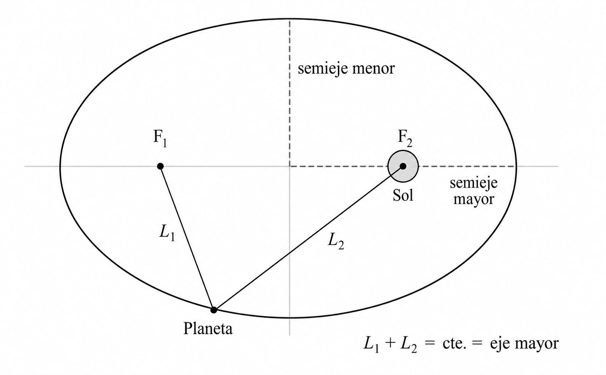
2ª. Ley de las áreas. El área barrida por unidad de tiempo (velocidad areolar) por el radio vector que une el Sol y un planeta es constante.
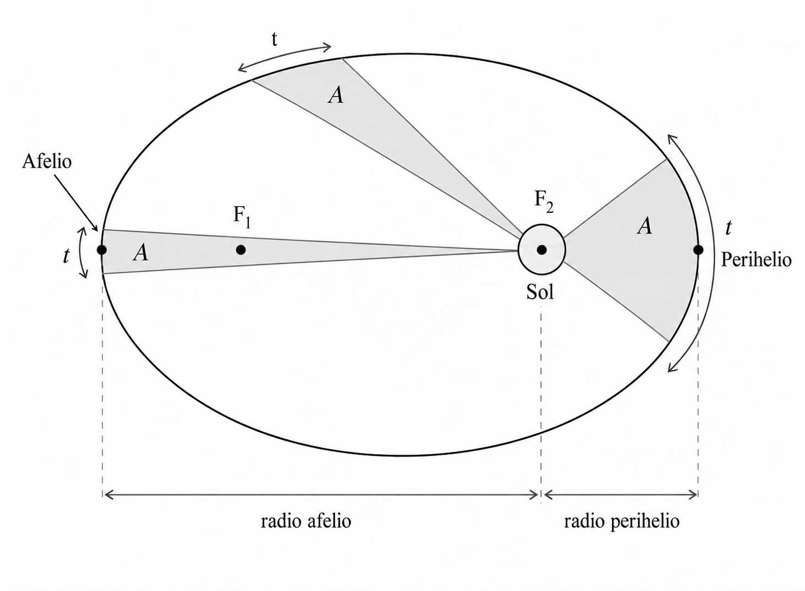
\(r_{afelio} \cdot v_{afelio} = r_{perihelio} \cdot v_{perihelio}\)
3ª. Ley de los períodos. Los cuadrados de los períodos son directamente proporcionales a los cubos de los semiejes mayores de las órbitas. (El período es el tiempo asociado a completar una órbita completa)
\(\frac{T^{2}}{r^{3}} = cte\)
\({r_{medio} = \frac{r_{afelio} + r_{perihelio}}{2}}_{}\)
Nota: La elipse es el lugar geométrico de los puntos del plano cuya suma de distancias a dos puntos fijos llamos focos (F, F’) es constante. La circunferencia es un caso particular de elipse en la que a y b toman el mismo valor. La excentricidad de la circunferencia vale 0. Si la excentricidad de la elipse es próxima a cero se puede aproximar a una circunferencia.
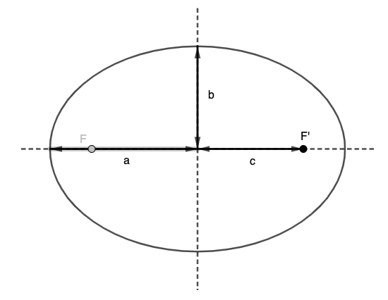
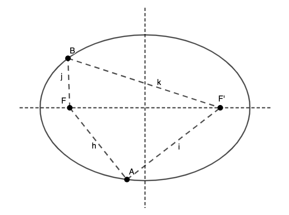
2a eje mayor, 2b eje menor, 2c distancia focal
h+i=j+k
\(b^{2} + c^{2} = a^{2}\)
excentricidad e=c/a
Área=πab
Cuanto más separadas están los focos de la elipse mayor es su excentricidad y se parece menos a una circunferencia.
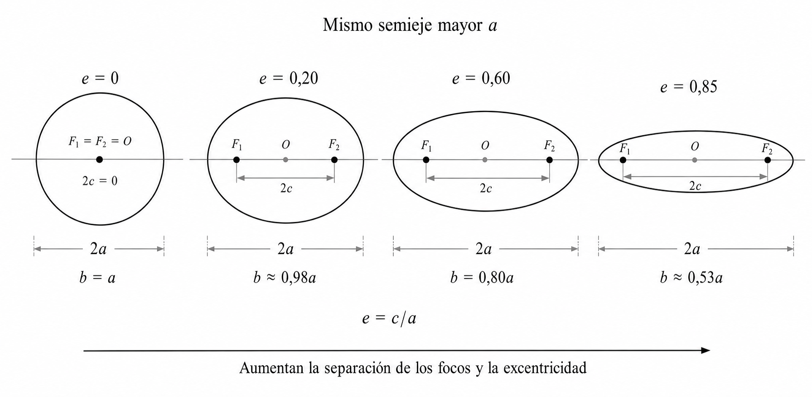
Momento de una fuerza y momento angular
Momento de una fuerza respecto a un punto
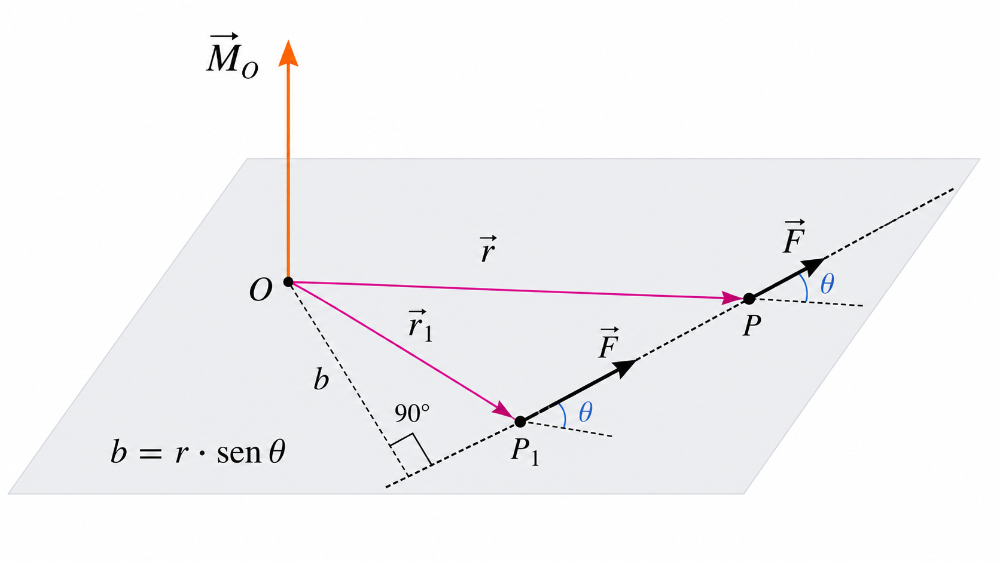
El momento de una fuerza respecto de un punto O se define como el producto vectorial del vector de posición del punto de aplicación de la fuerza respecto al punto O por dicha fuerza.
\(\overrightarrow{M_{o}} = \overrightarrow{r}\ \times \ \overrightarrow{F}\)
Se trata de una magnitud vectorial y su unidad del momento de una fuerza en el S.I. es Nm.
El momento de una fuerza depende del sistema de referencia adoptado.
Ten en cuenta que el producto vectorial de dos vectores da como resultado otro vector perpendicular al plano que los contiene. Por lo tanto el vector momento es perpendicular al plano que definen el vector de posición y la fuerza.
Su módulo se puede calcular así:
\(\left| \overrightarrow{M_o} \right| = \left| \overrightarrow{r} \right| \cdot \left| \overrightarrow{F} \right| \cdot \sin\theta\)
donde \(\theta\) es el ángulo que forman la fuerza y el vector de posición.
Si los vectores de posición y fuerza son paralelos, entonces el momento es nulo.
Si los vectores de posición y fuerza son perpendiculares el momento es máximo.
El sentido del momento de una fuerza se determina siguiendo la regla del tornillo o de la mano derecha.
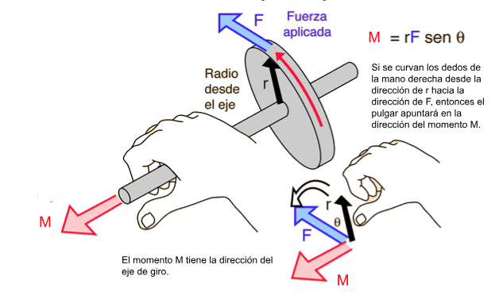
Imagen retocada de Hyperphysics.
Si abates el vector \(\overrightarrow{r}\) sobre el vector \(\overrightarrow{F}\) por el camino más corto, el momento apunta en dirección positiva si el sentido de giro es contrario a las agujas del reloj.
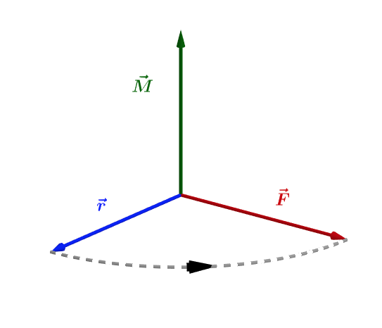 |
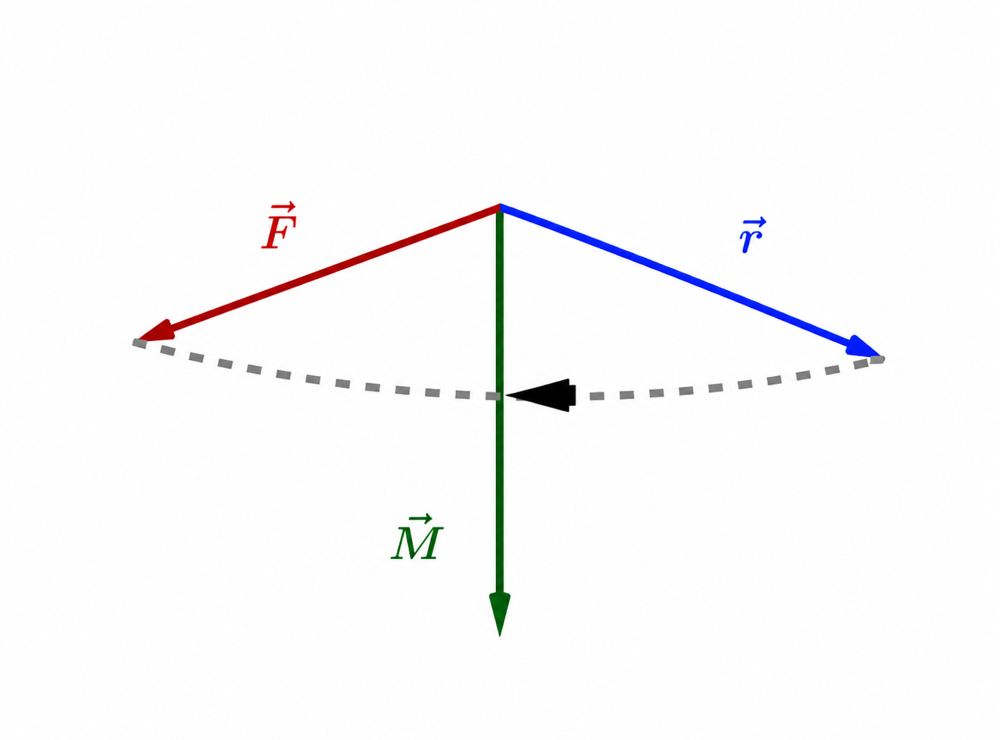 |
|---|---|
| Sentido antihorario: positivo | Sentido horario: negativo |
Momento angular
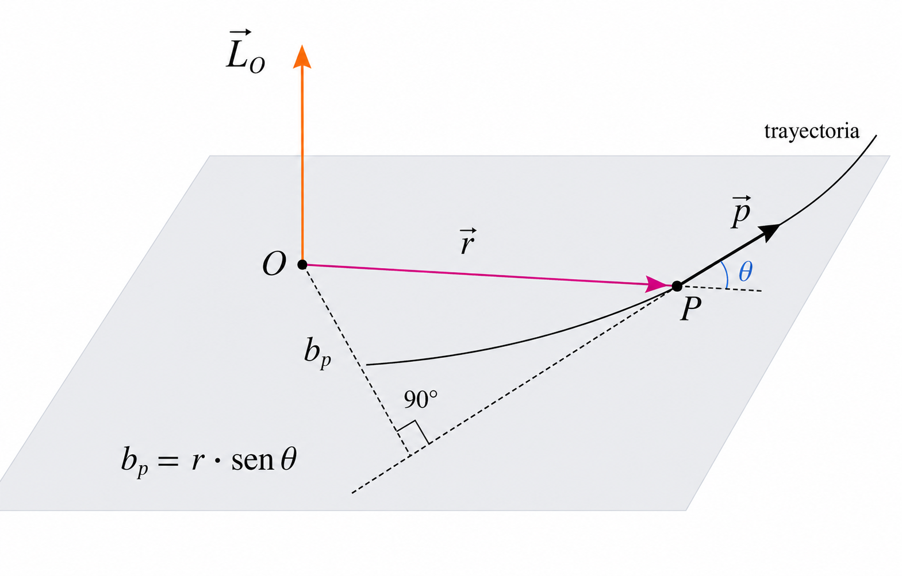
El momento angular de una partícula se define como el producto vectorial de su vector de posición y su vector cantidad de movimiento o momento lineal.
\(\overrightarrow{L_{o}} = \overrightarrow{r}\ \times \ \overrightarrow{p} = \overrightarrow{r}\ \times m \cdot \ \overrightarrow{v}\)
Se trata de una magnitud vectorial cuyas unidades en el S.I. son kg·m2/s ó J·s.
El momento angular depende del sistema de referencia adoptado.
El momento angular es perpendicular al plano definido por el vector de posición y el vector momento lineal.
Su módulo se puede calcular así:
\(\left| \overrightarrow{L_o} \right| = \left| \overrightarrow{r} \right| \cdot m\left| \overrightarrow{v} \right| \cdot \sin\theta\)
donde \(\theta\) es el ángulo que forman la fuerza y el vector de momento lineal(o velocidad).
Si los vectores de posición y momento lineal son paralelos, entonces el momento es nulo.
Si los vectores de posición y momento lineal son perpendiculares el momento es máximo. Esto ocurre en todos los puntos de las órbitas circulares y en ciertos puntos de otras órbitas.
Conservación del momento angular
Ecuación fundamental de la dinámica de rotación.
\(\overrightarrow{M} = \frac{d\ \overrightarrow{L}}{dt}\)
El momento de fuerza total que actúa sobre una partícula provoca un cambio es su momento angular.
Si el momento de fuerza total sobre una partícula es nulo, su momento angular no cambia.
Si \(\overrightarrow{M} = 0 \Rightarrow \overrightarrow{L} = \overrightarrow{cte}\)
Nota: Observa que si cambias L por p y M por F se obtiene la 2ª ley de Newton. Por este motivo se dice que L juega en la rotación el mismo papel que p en la traslación.
Demostración de primera ley Kepler con el momento angular
Los planetas del Sistema solar están sometidos a la fuerza de atracción del Sol. El vector posición \(\overrightarrow{r}\) y el vector fuerza \(\overrightarrow{F}\ \) tienen la misma dirección por lo que su producto vectorial es cero.
Al ser nulo el momento de la fuerza gravitatoria, el momento angular del planeta es constante.
Como se trata de un vector, para ser constante debe serlo tanto en dirección como en sentido y en módulo.
\(\overrightarrow{L_{}} = \overrightarrow{r}\ \times \ \overrightarrow{p} = \overrightarrow{r}\ \times m \cdot \ \overrightarrow{v}\)
Si la dirección es constante, los vectores \(\overrightarrow{r}\) y \(\overrightarrow{v}\) se encuentran siempre en un mismo plano. Por lo tanto, los planetas se mueven en trayectorias planas.
Si el sentido es constante, los planetas giran en un sentido u otro pero no pueden cambiar de sentido de giro alrededor del Sol puesto que eso supondría un cambio de sentido del momento angular.
Nota: no se demuestra que la órbita es una elipse (en general es una cónica), queda fuera bachillerato.
Demostración de segunda ley Kepler con el momento angular
Supongamos que la órbita es elíptica. Supongamos dos posiciones de la trayectoria del planeta separadas por un breve lapso de tiempo \(dt\). Las posiciones del planeta serán \(\overrightarrow{r}\) y \(\overrightarrow{r} + \overrightarrow{dr}.\) El área barrida por el vector \(\overrightarrow{r}\) durante esa fracción pequeña de tiempo \(dt\) será la mitad del área del paralelogramo formado por los vectores \(\overrightarrow{r}\) y \(\overrightarrow{dr}\) .
\(dA = \frac{1}{2}\left| \overrightarrow{r} \times \overrightarrow{dr} \right| = \frac{1}{2}\left| \overrightarrow{r} \times \overrightarrow{v}\ dt \right|\)
\(dA = \frac{1}{2}\left| \overrightarrow{r} \times \overrightarrow{v} \right|dt = \frac{1}{2}\frac{\left| \overrightarrow{L} \right|}{m}dt\)
\(\frac{dA}{dt} = \frac{1}{2}\frac{\left| \overrightarrow{L} \right|}{m} = cte\)
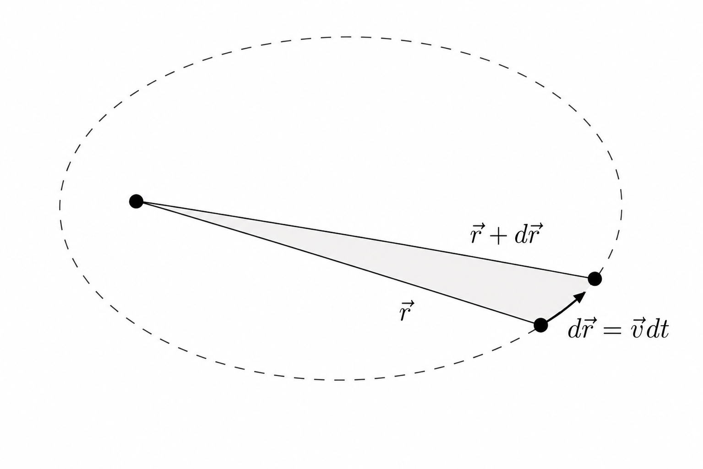
5. Ley de gravitación universal
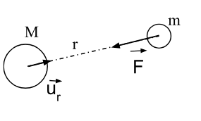
Enunciada por Isaac Newton:
Todos los cuerpos se atraen entre sí con una fuerza que es proporcional al producto de sus masas e inversamente proporcional al cuadrado de la distancia que las separa.
\(\overrightarrow{F} = - G\frac{Mm}{r^{2}}{\overrightarrow{u}}_{r}\)
\(\overrightarrow{F}\) es la fuerza que se ejercen mutuamente los cuerpos de masa M y m.
r es la distancia entre los centros de los dos cuerpos.
G es la constante de gravitación universal. Su valor es 6,67·10-11 N m2 kg-2.
\({\overrightarrow{u}}_{r}\) es un vector unitario en la dirección que une ambos cuerpos.
El signo negativo indica que se trata de una fuerza de atracción, es decir, tiene sentido contrario a
\({\overrightarrow{u}}_{r}.\)
Características de la interacción gravitatoria
Se trata de una interacción a distancia. No es necesario ningún medio que transmita la interacción entre los cuerpos.
La interacción es independiente del medio en el que se encuentran los cuerpos.
La fuerza gravitatoria que ejerce un cuerpo es siempre de atracción.
Las fuerzas que ejercen entre sí los cuerpos son iguales y de sentidos contrarios (principio de acción y reacción).
Es una fuerza que disminuye rápidamente con la distancia (como r-2).
Su radio de acción es todo el espacio excepto r = 0, es decir, cualquier cuerpo, por muy alejado que esté, experimentará esta fuerza.
La intensidad de la fuerza es directamente proporcional a las masas de los dos cuerpos que interaccionan.
La interacción se da en la dirección que pasa por los centros de los cuerpos. Además, la única coordenada espacial de la que depende es la distancia entre los centros de los cuerpos (r), por tanto, se trata de una fuerza central.
Interacción de un conjunto de masas puntuales. Principio de superposición
Cuando interaccionan más de dos partículas, la fuerza resultante que actúa sobre una de ellas se calcula sumando vectorialmente las fuerzas individuales que ejercen sobre ella cada una de las otras partículas.
Las fuerzas que ejercen entre sí dos partículas no se ven afectadas por la presencia del resto de partículas. Si se tiene un sistema de N partículas, la fuerza resultante sobre la partícula 1 se calculará de la siguiente forma:
\({\overrightarrow{F}}_{1} = {\overrightarrow{F}}_{21} + {\overrightarrow{F}}_{31} + {\overrightarrow{F}}_{41} + \cdots + {\overrightarrow{F}}_{N1}\)
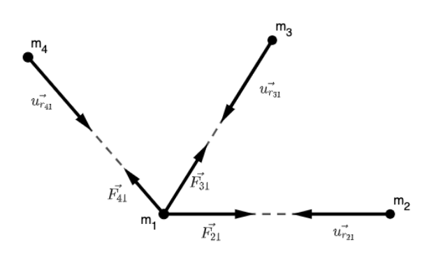
En donde \({\overrightarrow{F}}_{21}\) es la fuerza de atracción que ejerce la partícula 2 sobre la 1, \({\overrightarrow{F}}_{31}\) es la fuerza de atracción que ejerce la partícula 3 sobre la 1, etc.
De forma general, para una partícula i cualquiera, la fuerza resultante sobre ella será la suma de todas las fuerzas individuales:
\(\overrightarrow{F_{i}} = \sum_{n = 1\ n \neq i\ }^{N}\overrightarrow{F_{ni}}\)
6. Generalización del concepto de trabajo a una fuerza variable
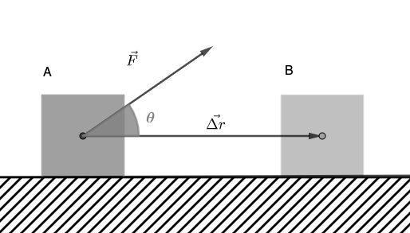
El trabajo es una magnitud física que sirve para cuantificar el intercambio de energía entre dos sistemas físicos.
El trabajo, WAB, realizado por una fuerza constante ejercida sobre un cuerpo que se desplaza de un punto A, a otro punto B, se calcula:
\(W_{AB} = \overrightarrow{F} \cdot \Delta\overrightarrow{r} = F\Delta r\cos\theta\)
En el Sistema Internacional, el trabajo se mide en julios (J).
Ampliación
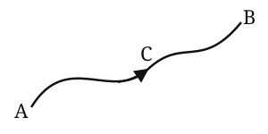
Si la fuerza no es constante, hay que descomponer la trayectoria en sucesivos desplazamientos muy pequeños dentro de los que la fuerza se mantenga aproximadamente constante. A esos sucesivos desplazamientos los llamamos desplazamientos infinitesimales, \(d\overrightarrow{r}\).
Por tanto, el trabajo realizado por una fuerza variable sobre una partícula que se desplaza de un punto A hasta otro punto B, a lo largo de una trayectoria C se calcula como la suma de los trabajos infinitesimales en cada uno de esos pequeños trayectos. Ese cálculo se denomina cálculo integral y se escapa de vuestros conocimientos matemáticos actuales:
\(W_{AB} = {}_{C}\int_{}^{}\overrightarrow{F} \cdot d\overrightarrow{r}\)
6.1. Fuerzas conservativas
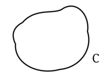
En general, el trabajo realizado por una fuerza, a lo largo de un camino cerrado, C, es distinto de cero:
\(W_{C} \neq 0\)
Se denominan fuerzas conservativas aquellas para las que el trabajo realizado a lo largo de cualquier camino cerrado, C, es siempre cero:
\(W_{C} = 0\)
En este caso, si se toman dos puntos, A y B, de un camino cerrado cualquiera, el trabajo a lo largo del camino será la suma del trabajo desde A hasta B por el camino C1 y el trabajo desde B hasta A por el camino C2.
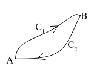
\(W_{C} = W_{A \rightarrow B}^{C_{1}} + W_{B \rightarrow A}^{C_{2}}\)
Supongamos que recorremos C2 desde B hasta A. En cada punto la fuerza aplicada \(\underline{F}\) y el infinitésimo de camino recorrido \(\underline{dr}\) formarán un ángulo 𝛂. Si se recorre el mismo camino C2 desde A hasta B la fuerza \(\underline{F}\) y el desplazamiento infinitesimal \(\underline{dr}\) en cada punto formarán el ángulo suplementario 180º-𝛂. El producto escalar calculado en cada punto tendrá un valor si vamos de A a B y el mismo valor cambiado de signo si vamos de B a A.
\(W_{C} = W_{A \rightarrow B}^{C_{1}} - W_{A \rightarrow B}^{C_{2}}\)
Como el trabajo en el camino cerrado es nula si la fuerza es conservativa, los trabajos por los caminos C1 y C2 son iguales.
\(W_{C} = 0 \Rightarrow W_{A \rightarrow B}^{C_{1}} - W_{A \rightarrow B}^{C_{2}} = 0 \Rightarrow W_{A \rightarrow B}^{C_{1}} = W_{A \rightarrow B}^{C_{2}}\)
Por tanto, el trabajo realizado por una fuerza conservativa para ir de un punto A hasta otro punto B sólo depende de los puntos inicial, A, y final, B.
6.2. Energía potencial
Sea una fuerza conservativa variable. El trabajo calculado a lo largo de un camino cerrado, C, es nulo.
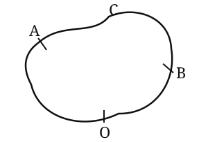
\(W_{C} = 0\)
A, B y O son tres puntos cualesquiera de la curva cerrada C.
Se define la energía potencial en un punto A, EpA, como el trabajo realizado por una fuerza conservativa para ir del punto A hasta un punto de referencia, O, elegido arbitrariamente y en el que se asigna un valor nulo a la energía potencial:
\({Ep}_{A} = W_{A \rightarrow O}^{} = - W_{O \rightarrow A}^{}\)
Así, el trabajo realizado por una fuerza conservativa para desplazar una partícula de un punto, A, a otro punto, B, se puede expresar en función de la variación de la energía potencial entre estos dos puntos:
\(W_{A \rightarrow B} = W_{A \rightarrow O} + W_{O \rightarrow B}\ = W_{A \rightarrow O} - W_{B \rightarrow O} = \ {Ep}_{A} - {Ep}_{B}\)
\(W_{A \rightarrow B} = {- ( - Ep}_{A}) - {Ep}_{B} = - ({Ep}_{B} - {Ep}_{A})\)
\(W_{A \rightarrow B} = - \Delta Ep\)
El valor de la energía potencial dependerá del punto que se haya tomado como referencia. Así, la energía potencial en un punto A tendrá valores distintos según se elija O1 u O2 como referencia.
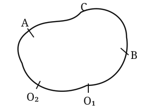
\({Ep}_{A}^{O_{1}} = W_{A \rightarrow O_{1}}^{}\)
\({Ep}_{A}^{O_{2}} = W_{A \rightarrow O_{2}}^{}\)
Sin embargo, el valor de la diferencia EpB – EpA será independiente del punto de referencia elegido, ya que, al tratarse de una fuerza conservativa, el trabajo de A hasta B no depende del camino que se recorra y, por tanto, tendrá siempre el mismo valor. Por ello, lo que tiene realmente sentido físico es la diferencia de energía potencial entre dos puntos y no su valor en un punto.
\({Ep}_{A}^{O_{1}} - {Ep}_{B}^{O_{1}} = W_{A \rightarrow O_{1}}^{} - W_{B \rightarrow O_{1}}^{} = W_{A \rightarrow O_{1}}^{} + W_{O_{1} \rightarrow B}^{} = W_{A \rightarrow B}^{}\)
\({Ep}_{A}^{O_{2}} - {Ep}_{B}^{O_{2}} = W_{A \rightarrow O_{2}}^{} - W_{B \rightarrow O_{2}}^{} = W_{A \rightarrow O_{2}}^{} + W_{O_{2} \rightarrow B}^{} = W_{A \rightarrow B}^{}\)
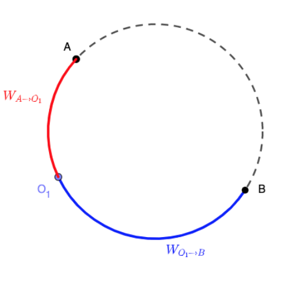
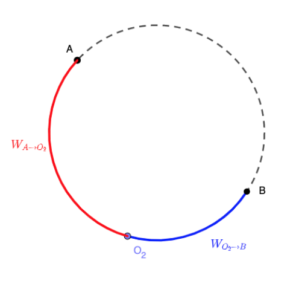
6.3. Teorema de las fuerzas vivas
Sea un cuerpo de masa m que se desplaza en línea recta desde un punto A hasta un punto B bajo la acción de una fuerza constante \(\overrightarrow{F}\).
El trabajo realizado por la fuerza a lo largo del desplazamiento Δx depende únicamente de su componente tangencial Fₜ (en la dirección del movimiento), ya que la componente normal Fₙ es perpendicular al desplazamiento y no realiza trabajo:
\(W_{A \rightarrow B} = F \cdot \Delta x\)
Aplicando la segunda ley de Newton en la dirección del movimiento (Fₜ = m · a), el trabajo se expresa como:
\(W_{A \rightarrow B} = m \cdot a \cdot \Delta x\)
Por la cinemática del movimiento rectilíneo uniformemente acelerado (MRUA), la aceleración y las velocidades en los puntos A y B se relacionan mediante:
\({v_{B}}^{2} - {v_{A}}^{2} = 2 \cdot a \cdot \Delta x\ \rightarrow a \cdot \Delta x\ = \frac{1}{2}({v_{B}}^{2} - {v_{A}}^{2})\)
Sustituyendo esta relación en la expresión del trabajo:
\(W_{A \rightarrow B} = m \cdot \frac{1}{2}({v_{B}}^{2} - {v_{A}}^{2})\ \rightarrow W_{A \rightarrow B} = \frac{1}{2}m \cdot {v_{B}}^{2} - \frac{1}{2}m \cdot {v_{A}}^{2}\ \)
Definiendo la energía cinética como E꜀ = ½ · m · v², se obtiene el Teorema de las fuerzas vivas:
\(W_{A \rightarrow B} = Ec_{B} - Ec_{A} = \Delta Ec\)
Enunciado: El trabajo total realizado por las fuerzas que actúan sobre un cuerpo es igual a la variación de su energía cinética.
Esta expresión corresponde al teorema de las fuerzas vivas. Es una relación general, válida para cualquier tipo de fuerza y para cualquier movimiento.
6.4. Conservación de la energía mecánica
En el caso particular de que se trate de una fuerza conservativa se cumplirá, además del teorema de las fuerzas vivas, la relación: WAB=-ΔEp:
\[ \left. \begin{aligned} W_{AB} &= -\Delta E_p \\ W_{AB} &= \Delta E_c \end{aligned} \right\} \Rightarrow \Delta E_c = -\Delta E_p \Rightarrow \Delta E_c + \Delta E_p = 0 \]
Desarrollando la expresión: \(E_{C_{B}} - E_{C_{A}} + {Ep}_{B} - {Ep}_{A} = 0 \Rightarrow \left( E_{C_{B}} + {Ep}_{B} \right) - \left( E_{C_{A}} + {Ep}_{A} \right) = 0\)
Llamando energía mecánica, Em, a la suma de la energía cinética y de la energía potencial que tiene un cuerpo:
Em = EC + Ep
Se puede escribir:
\(\left( E_{C_B} + Ep_B \right) - \left( E_{C_A} + Ep_A \right) = E_{m_B} - E_{m_A} = 0 \Rightarrow \Delta E_m = 0\)
Esta es la expresión de la conservación de la energía mecánica, válida sólo en el caso de que las fuerzas implicadas sean conservativas.
Si, además, existiesen fuerzas no conservativas, como, por ejemplo, fuerzas de rozamiento, el trabajo total cuando la partícula se desplaza de A hasta B es la suma del trabajo debido a las fuerzas conservativas y al trabajo debido a las fuerzas no conservativas:
\(W_{AB} = W_{conservativas} + W_{no\ conservativas}\)
Teniendo en cuenta el teorema de las fuerzas vivas y la relación entre trabajo realizado por fuerzas conservativas y variación de energía potencial:
\({\Delta E}_{C_{AB}} = - \Delta{Ep}_{AB} + W_{no\ conservativas} \Rightarrow {\Delta E}_{C_{AB}} + \Delta{Ep}_{AB} = W_{no\ conservativas}\)
De donde se deduce, teniendo en cuenta la definición de energía mecánica:
\({\Delta E}_{m_{AB}} = W_{no\ conservativas}\)
7. Fuerzas centrales
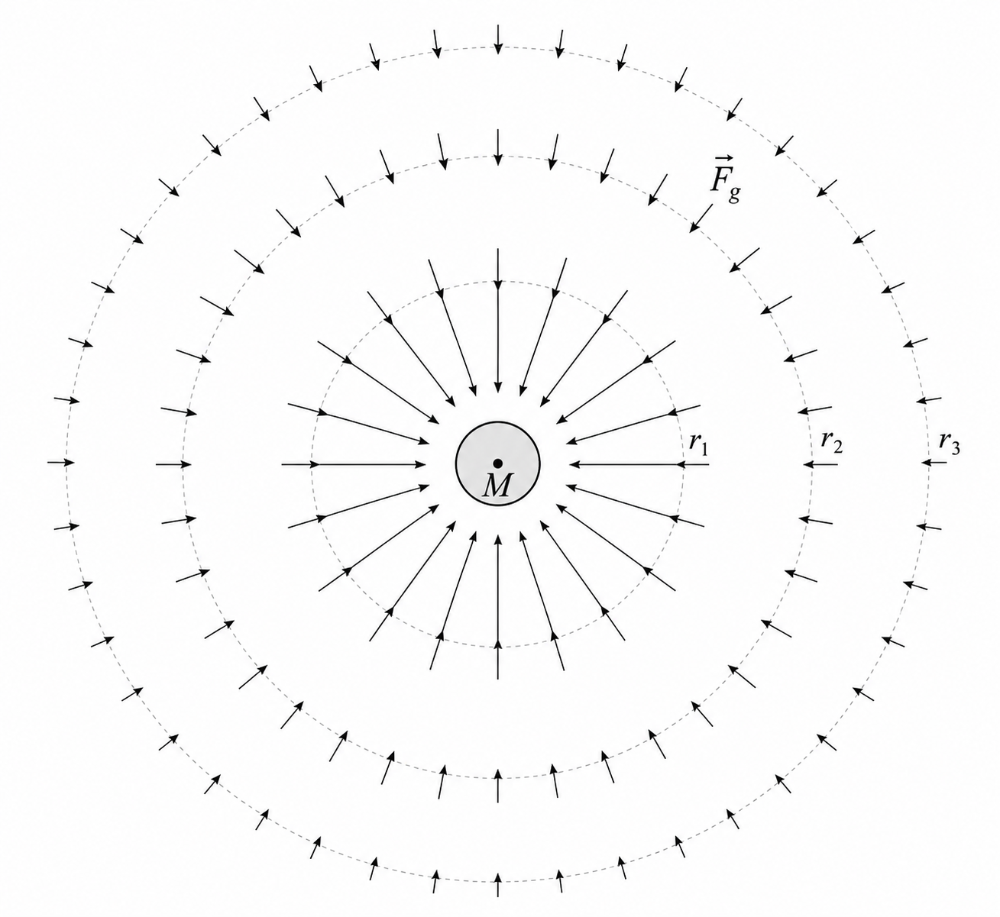
Una fuerza central es aquella cuya dirección pasa siempre por un punto fijo (centro de fuerzas) y cuyo módulo depende exclusivamente de la distancia r a dicho punto. Su expresión general es:
\(\overrightarrow{F} = f(r)\ {\overrightarrow{u}}_{r}\)
Donde \({\overrightarrow{u}}_{r}\) es el vector unitario radial.
Se puede demostrar con carácter general que las fuerzas centrales son conservativas.
Las fuerzas elásticas de un muelle y las fuerzas gravitatorias y las eléctricas son casos de fuerzas centrales.
Ampliación
Vamos a comprobar que en un camino cerrado el trabajo que realiza una fuerza central es nulo.
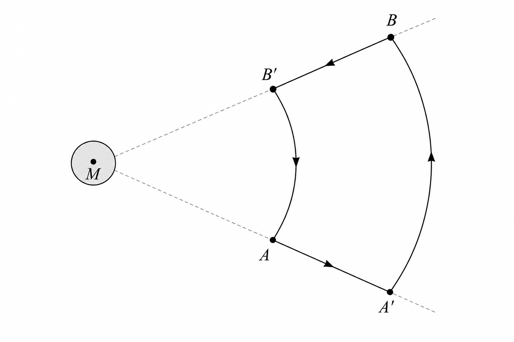
Descomponemos el trayecto AA en cuatro tramos AA’, A’B, BB’ y B’A.
Tramos circulares (a distancia \(r\) constante):
Al moverse en arcos de circunferencia con centro en el foco, la fuerza central es en todo momento perpendicular al desplazamiento (forman un ángulo de 90°).
Como el producto escalar de dos vectores perpendiculares es cero, el trabajo en estos tramos es nulo (\(W_{A'B}=0\) y \(W_{B'A}=0\)).
Tramos radiales (acercamiento BB’ o alejamiento AA’):
En estos tramos el cuerpo cambia su distancia \(r\) al centro. Como la fuerza varía con la distancia, dividimos el camino radial en una gran cantidad de tramos muy pequeños (\(\Delta r\)).
En cada pequeño intervalo, la fuerza apenas cambia y puede considerarse constante. Además, como la fuerza es central, su valor es exactamente el mismo para cualquier tramo que se encuentre a la misma distancia \(r\) del centro.
El trabajo total del camino radial es la suma de los trabajos realizados en cada uno de esos pequeños tramos.
Al alejarse del centro, la fuerza y el desplazamiento tienen sentidos opuestos:
\(W_i = F(r)\,\Delta r\cos(180°) = -F(r)\,\Delta r\)
Al regresar acercándose al centro, el sentido del desplazamiento se invierte y ambos vectores son paralelos:
\(W_i = F(r)\,\Delta r\cos(0°) = F(r)\,\Delta r\)
Como a cada distancia \(r\) la fuerza vale exactamente lo mismo, ambos trabajos tienen idéntico valor numérico y signo contrario. Al sumarlos todos, se cancelan dos a dos.
Conclusión:
Los tramos circulares no realizan trabajo (\(W=0\)) y los trabajos de los tramos radiales de ida se compensan exactamente con los de vuelta (\(W_{AA'}=-W_{BB'}\)). Por tanto, el trabajo total a lo largo de cualquier camino cerrado es nulo:
\(W_{AA}=0\)
8. Energía potencial gravitatoria de una masa puntual en presencia de otra
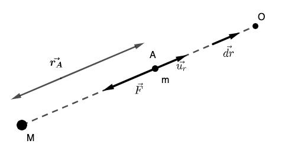
La fuerza de la gravedad es conservativa; por tanto, se puede definir una magnitud escalar denominada energía potencial gravitatoria (Eₚ) asociada a la posición que ocupa una partícula de masa m en presencia de otra masa M situada a una distancia r.
Por ser una fuerza conservativa, el trabajo realizado por la fuerza gravitatoria para trasladar la masa m desde una posición A hasta otra B coincide con la disminución de su energía potencial:
WA→B = −ΔEp = EpA − EpB
Si se elige como punto de referencia O, el infinito, donde la energía potencial será nula:
EpA = −W∞→A = Wext
Por tanto, la expresión de la energía potencial gravitatoria para una partícula de masa m en presencia de otra, de masa M, situada a una distancia r es:
\(Ep = - G \cdot \frac{M \cdot m}{r}\)
Si quisiéramos traer la masa desde el infinito hasta el punto A a velocidad constante, un agente exterior debería aplicar una fuerza opuesta a la gravedad (Fₑₓₜ = −F) para contrarrestar la atracción, resultando:
\(W_{\infty \rightarrow A}^{ext} = -W_{\infty \rightarrow A}^{grav} = Ep_A\)
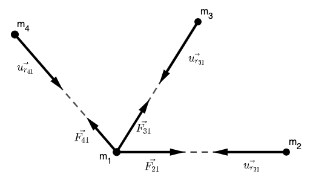
Si una partícula de masa m1 está en presencia de otras partículas (m2, m3,… mN), teniendo en cuenta que, según el principio de superposición, la fuerza resultante es la suma vectorial de las fuerzas que cada una de las demás partículas ejercen sobre m1:
\({Ep}_{1} = {Ep}_{12} + {Ep}_{13} + ... + {Ep}_{1N} = - G\frac{m_{1}m_{2}}{r_{21}} - G\frac{m_{1}m_{3}}{r_{31}} - \cdots - G\frac{m_{1}m_{N}}{r_{N1}}\)
8.1. Energía potencial gravitatoria terrestre
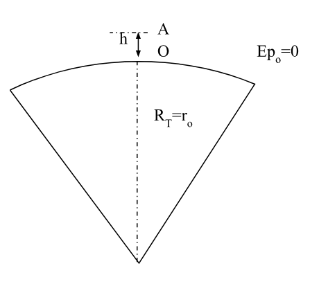
Para una partícula de masa m, situada en un punto exterior a la superficie de la Tierra, la energía potencial es:
\(Ep = - G\frac{M_{T}m}{r} = - G\frac{M_{T}m}{R_{T} + h}\)
En el caso de un punto, A, próximo a la superficie de la Tierra; tomando como punto de referencia, O, el valor r=RT, en el que el valor de la energía potencial es nulo:
\({Ep}_{A} = - {GM}_{T}m\left( \frac{1}{r_{A}} - \frac{1}{r_{O}} \right) = \ \)
\({Ep}_{A} = - {GM}_{T}m\left( \frac{1}{R_{T} + h} - \frac{1}{R_{T}} \right) = - {GM}_{T}m\left( \frac{R_{T} - R_{T} - h}{\left( R_{T} + h \right)R_{T}} \right) = {GM}_{T}m\left( \frac{h}{\left( R_{T} + h \right)R_{T}} \right)\)
Si el punto, A, está en las proximidades de la superficie terrestre, el valor de la altura, h, es muy pequeño respecto al valor del radio de la Tierra, RT; por tanto, h puede despreciarse frente al valor del radio de la Tierra: RT + h ≈ RT.
\({Ep}_{A} = G\frac{M_{T}}{R_{T}^{2}}mh = g_{0}mh\ \Rightarrow \ {Ep}_{A} = mg_{0}h\)
¿Hasta qué altura es válido utilizar la aproximación Ep = m · g · h?
La expresión Ep = m · g · h asume que la aceleración de la gravedad g se mantiene constante e igual a su valor en la superficie (g₀ ≈ 9,8 m/s²). Sin embargo, según la ley de gravitación universal, g disminuye con la distancia al centro de la Tierra (r = Rₜ + h), por lo que la fórmula clásica sobreestima la energía potencial real.
El error relativo cometido al usar m · g · h en lugar de la expresión exacta viene determinado por la relación entre la altura h y el radio terrestre (Rₜ ≈ 6.370 km):
Error relativo ≈ h / Rₜ
| Altura (h) | Entorno | Error relativo | Validez del modelo m · g · h |
|---|---|---|---|
| h ≤ 10 km | Troposfera (vuelos comerciales, Everest) | < 0,15% | Excelente: Despreciable en problemas habituales y laboratorio. |
| h ≈ 64 km | Mesosfera | ≈ 1% | Muy buena: Válido para estimaciones rápidas de orden de magnitud. |
| h ≈ 100 km | Línea de Kármán (límite del espacio) | ≈ 1,5% | Límite práctico: Comienza a ser necesario el modelo general. |
| h ≈ 400 km | Órbita de la ISS (espacio cercano) | ≈ 6% | Inaceptable: Es obligatorio emplear Ep = −G · (M · m / r). |
| h ≥ 6.370 km | Órbitas medias y altas (h ≥ Rₜ) | ≥ 50% | Divergencia total: El modelo lineal pierde cualquier validez. |
Criterio de aplicación:
Para h ≤ 10 km (h ≪ Rₜ): Se puede utilizar con total rigor Ep = m · g · h, considerando g ≈ cte.
Para h > 100 km (satélites y escala astronómica): Debe emplearse siempre la expresión general de la gravitación universal:
Ep = −G · [M · m / (Rₜ + h)]
9. Concepto de campo
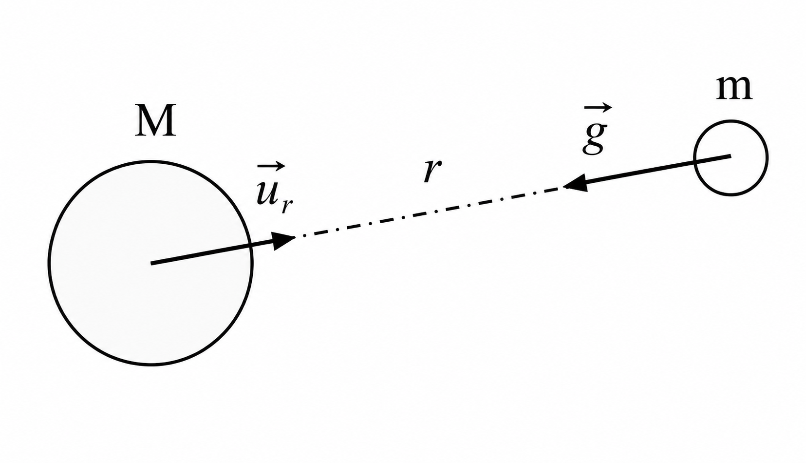
La ley de gravitación universal de Newton supone que la interacción entre los cuerpos se produce a distancia, sin necesidad de que exista contacto entre ellas y sin necesidad de que exista un medio que transmita dicha interacción.
Para salvar el problema de la interacción a distancia se utiliza el concepto de campo:
Una partícula, con una determinada propiedad, modifica el espacio que la rodea.
Esta modificación del espacio se dice que es el campo creado por la partícula.
Esta partícula no se ve afectada por este cambio en las propiedades del espacio que ella misma produce.
La existencia del campo se pone de manifiesto al introducir en él una segunda partícula, que posee la misma propiedad que la que ha creado el campo. Esta segunda partícula, llamada partícula de prueba, experimentará una fuerza.
Los campos pueden ser escalares o vectoriales:
Campo escalar. A cada punto del espacio en el que está definido el campo se le asigna un escalar.
Campo vectorial. A cada punto del espacio en el que está definido el campo se le asigna un vector.
9.1. Campo gravitatorio
Si la propiedad que crea el campo es la masa, este se denomina campo gravitatorio.
Se define la intensidad de campo gravitatorio o campo gravitatorio \(\overrightarrow{g}\) creado por un cuerpo de masa M, en un punto del espacio situado a una distancia r de él, como la fuerza \(\overrightarrow{F}\) que experimenta la unidad de masa colocada en dicho punto:
\(\overrightarrow{g} = \frac{\overrightarrow{F}}{m}\)
En el Sistema Internacional, \(\overrightarrow{g}\) se mide en N kg-1 o m s-2.
Como:
\(\overrightarrow{F} = -G\frac{Mm}{r^2}\overrightarrow{u}_r \Rightarrow \overrightarrow{g} = \frac{\overrightarrow{F}}{m} = -G\frac{M}{r^2}\overrightarrow{u}_r\)
Algunas características generales del campo gravitatorio:
Se trata de un campo vectorial.
Su valor sólo depende de la masa de la partícula que crea el campo y de la distancia, respecto a dicha partícula, a la que se encuentra el punto donde se crea el campo.
El campo está definido para cualquier valor de r, es decir, para todo el espacio, excepto para r = 0.
Su módulo disminuye rápidamente con la distancia (como 1/r2).
Es un campo central, por tanto es un campo conservativo.
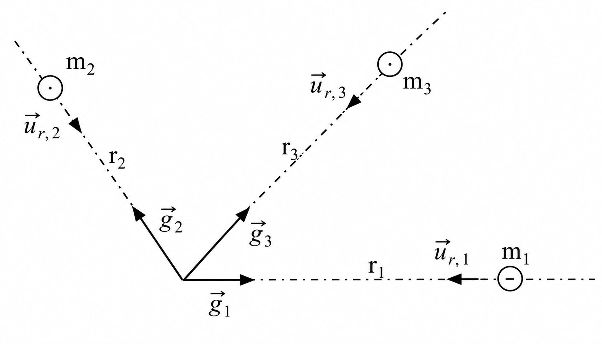
Si en vez de una masa M se tiene un conjunto de partículas de masas m1, m2, m3,… mN, teniendo en cuenta que, según el principio de superposición, la fuerza resultante es la suma vectorial de las fuerzas que cada una de las partículas ejercen sobre la partícula de prueba, entonces, ya que hay una relación de proporcionalidad entre \(\overrightarrow{g}\) y \(\overrightarrow{F}\), la intensidad de campo gravitatorio en un punto, debido a un conjunto de partículas, es la suma vectorial de las intensidades de campo en dicho punto debido a cada una de ellas:
\(\overrightarrow{g} = \sum_{i = 1}^{N}{\overrightarrow{g}}_{i} = \sum_{i = 1}^{N} - G\frac{m_{i}}{r_{i}^{2}}{\overrightarrow{u}}_{r,i}\)
En donde ri es la distancia de la partícula de masa mi al punto donde se quiere hallar el campo total y \({\overrightarrow{u}}_{r,i}\) es el vector unitario en la dirección que pasa por el punto donde se encuentra la partícula de masa mi y por el punto donde se quiere hallar el campo total.
9.2. Líneas de campo
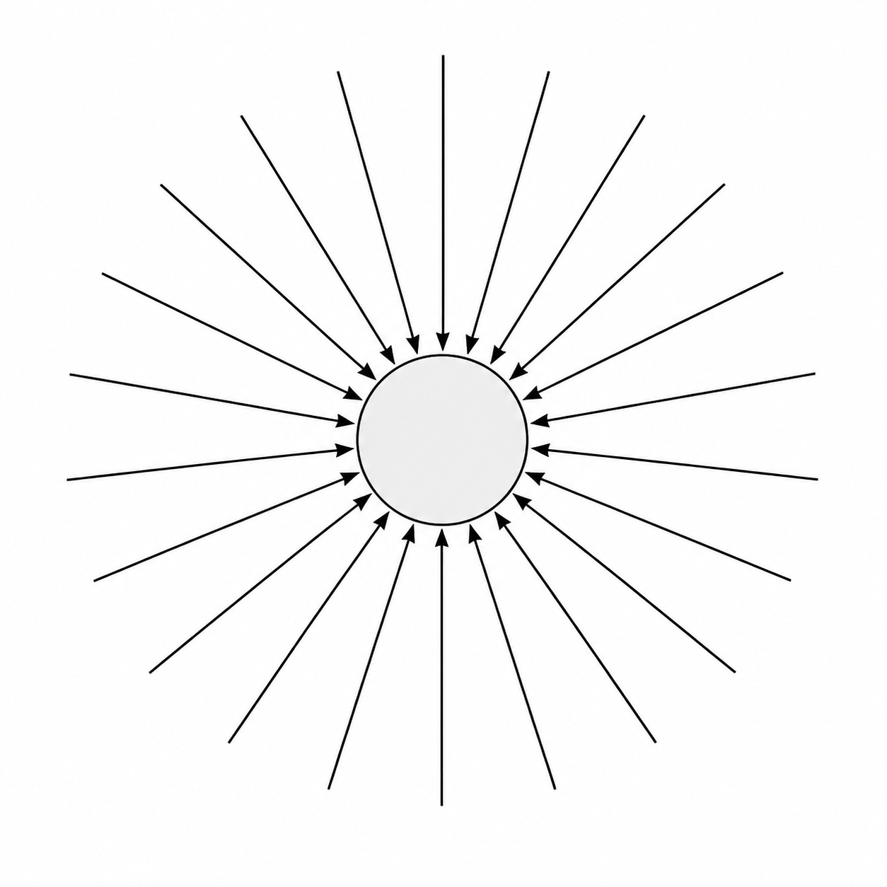
Son líneas para las que el vector campo es tangente a ellas en todos sus puntos.
Dos líneas de campo no pueden cortarse ya que, si fuera así, un mismo punto tendría asignado dos vectores intensidad de campo diferentes.
En el caso del campo gravitatorio creado por una masa puntual, las líneas de campo son rectas que pasan por el punto en el que se encuentra dicha partícula.
9.3. Potencial gravitatorio
Para un campo vectorial conservativo se puede definir un campo escalar asociado. Se define el potencial gravitatorio V, creado por una partícula de masa M en un punto del espacio que se encuentra a una distancia r de dicha partícula, como la energía potencial que tiene la unidad de masa cuando se sitúa en dicho punto:
\(V = \frac{Ep}{m}\)
Teniendo en cuenta la expresión de la energía potencial gravitatoria:
\(V = \frac{Ep}{m} = \frac{-G\frac{Mm}{r}}{m} = -G\frac{M}{r}\)
En el Sistema Internacional, el potencial gravitatorio se mide en J kg-1.
Algunas características del potencial gravitatorio:
Se trata de un campo escalar.
Su valor sólo depende de la masa de la partícula que crea el campo y de la distancia, respecto a dicha partícula, a la que se encuentra el punto donde se quiere hallar el valor del potencial.
El potencial está definido para cualquier valor de r, es decir, para todo el espacio, excepto para r = 0.
Su valor absoluto disminuye rápidamente con la distancia (como 1/r).
Tiene simetría esférica, ya que su valor es el mismo para cualquier punto que se encuentre a la misma distancia de la partícula que crea el campo.
Al igual que la energía potencial, el valor del potencial en un punto es arbitrario ya que depende del punto elegido como referencia para la energía potencial. Por tanto, al igual que para la energía potencial, lo que tiene sentido físico es la diferencia de potencial entre dos puntos.
Si se tiene un conjunto de partículas de masas m1, m2, m3,… mN, situadas respectivamente a una distancia r1, r2, r3,… rN de un punto del espacio, el potencial gravitatorio en ese punto debido a estas partículas es, aplicando el principio de superposición, la suma del potencial que crea cada una de ellas en dicho punto:
\(V = \sum_{i = 1}^{N}V_{i} = - G\sum_{i = 1}^{N}\frac{m_{i}}{r_{i}}\)
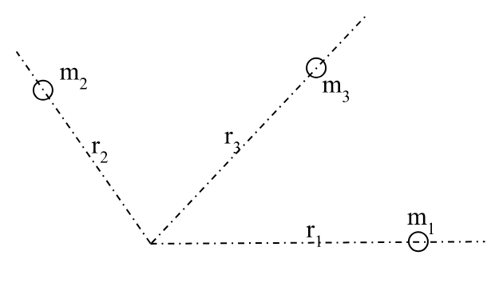
9.4. Superficies equipotenciales
Se llama superficie equipotencial a aquella en la que todos sus puntos tienen el mismo valor de V.
Si se calcula el trabajo para desplazar una partícula de masa m desde un punto A hasta otro punto B, ambos en la misma superficie equipotencial:
\(W_{AB} = - \Delta Ep = - \left( {Ep}_{B} - {Ep}_{A} \right) = - \left( {mV}_{B} - {mV}_{A} \right) = - m\left( V_{B} - V_{A} \right)\)
Como los dos puntos están en la misma superficie equipotencial, entonces VA= VB, por tanto:
WAB = 0
De aquí se deduce que el vector fuerza \(\overrightarrow{F}\) es perpendicular a las superficies equipotenciales, ya que para que el trabajo realizado entre dos puntos cualesquiera de una misma superficie equipotencial sea siempre nulo, \(\overrightarrow{F}\) y \(d\overrightarrow{r}\) deben ser perpendiculares.
Como \(\overrightarrow{F} = m\overrightarrow{g}\), el vector \(\overrightarrow{g}\) es también perpendicular a las superficies equipotenciales.
Para una masa puntual, teniendo en cuenta la expresión del potencial gravitatorio:
\(V = - G\frac{M}{r}\)
Tanto G como M son constantes. Por tanto, las superficies con el mismo valor de V son aquellas en las que la distancia r de cualquier punto de la superficie al punto donde se encuentra situada la partícula que crea el campo, es la misma. Estas superficies son esferas concéntricas cuyo centro es el punto donde se encuentra la partícula que crea el campo.
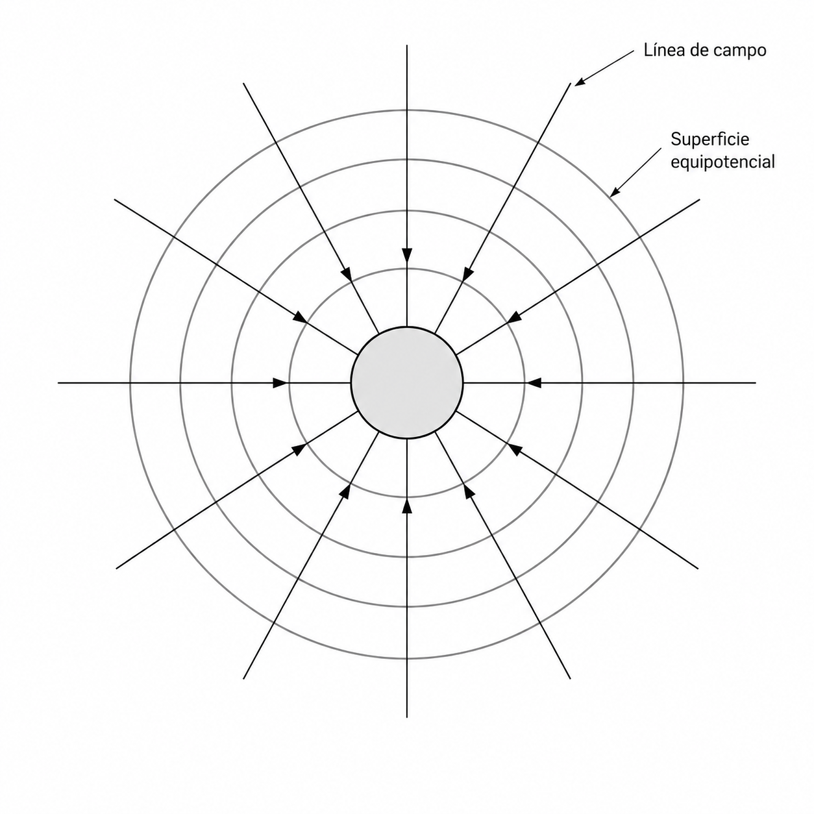 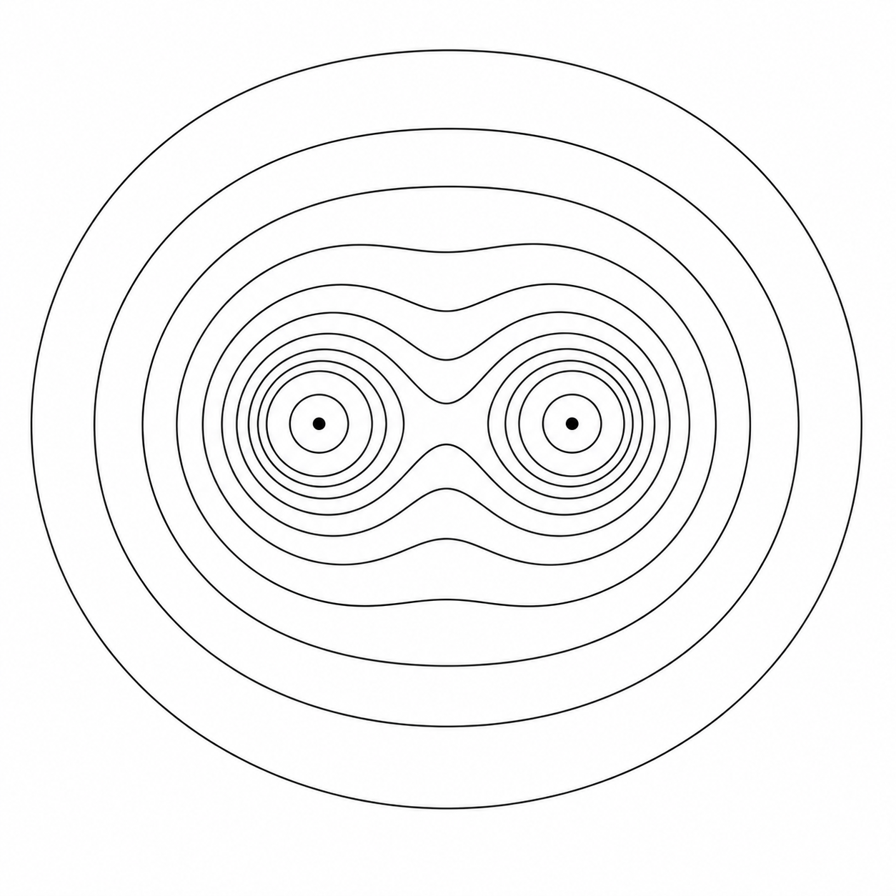 |
9.5. Relación entre campo y potencial gravitatorios
Para el campo gravitatorio se tienen las siguientes relaciones:
\(\overrightarrow{g} = \frac{\overrightarrow{F}}{m}\ ;\ V = \frac{Ep}{m}\)
Como la gravedad es una fuerza conservativa, el trabajo realizado por el campo para desplazar una partícula de masa m entre dos puntos A y B es:
\(W_{AB} = - \Delta Ep = - (Ep_{B} - Ep_{A})\)
Dividiendo entre la masa m, obtenemos el trabajo por unidad de masa:
\(\frac{W_{AB}}{m}_{} = - \frac{\Delta Ep}{m}_{} = - (V_{B} - V_{A})\) (I)
Por la definición general de trabajo mecánico, el trabajo ejercido por la fuerza gravitatoria a lo largo de un pequeño desplazamiento \(\overrightarrow{\Delta r}\) entre A y B es:
\(W_{AB} = \overrightarrow{F} \cdot \overrightarrow{\Delta r}\)
Dividiendo esta igualdad entre la masa m y aplicando la definición de campo:
\(\frac{W_{AB}}{m} = \overrightarrow{g} \cdot \overrightarrow{\Delta r}\) (II)
Igualando las dos formas de expresar el trabajo por unidad de masa (I y II):
\(\overrightarrow{g} \cdot \overrightarrow{\Delta r} = - \Delta V\)
Considerando un desplazamiento puramente radial
\(\overrightarrow{\Delta r} = \Delta r\ \overrightarrow{u_{r}}\)
y sabiendo que el campo es atractivo
\(\overrightarrow{g} = - g\ \overrightarrow{u_{r}}\)
podemos concluir que:
\(- g\ \overrightarrow{u_{r}} \cdot \ \Delta r\ \overrightarrow{u_{r}} = - \Delta V\ \)
\(- g\ \Delta r\ \overrightarrow{u_{r}} \cdot \ \overrightarrow{u_{r}} = - \Delta V\ \)
\(g\ \Delta r = \Delta V\ \)
\(g = \frac{\Delta V}{\Delta r}\)
Para variaciones infinitesimales de distancia:
\(g = \frac{dV}{dr}\)
En forma vectorial:
\(\overrightarrow{g} = - \frac{dV}{dr}\ \overrightarrow{u_{r}}\)
De forma análoga, para la fuerza y la energía potencial:
\(\overrightarrow{F} = - \frac{dEp}{dr}\ \overrightarrow{u_{r}}\)
Conclusiones:
1. Hay que derivar el potencial respecto de r para obtener el módulo del campo gravitatorio, y derivar la energía potencial respecto de r para obtener el módulo de la fuerza gravitatoria.
2. Como el potencial (V) y la energía potencial (Ep) son magnitudes escalares, al derivarlas respecto de r se obtiene un valor escalar. Para que la igualdad matemática sea vectorial y dimensionalmente correcta, se debe multiplicar por el vector unitario radial (\(\overrightarrow{u_{r}}\)).
3. La fuerza gravitatoria marca la dirección y el sentido en los que se produce el máximo decrecimiento de la energía potencial. Piensa en el caso del campo gravitatorio terrestre. En el suelo la energía potencial es menor que a un metro de altura. La energía potencial disminuye hacia abajo, pues en esa dirección y sentido apunta la fuerza peso.
4. El campo gravitatorio marca la dirección y el sentido en los que se produce el máximo decrecimiento del potencial.
Caída libre
Los cuerpos que se encuentran sometidos únicamente a la acción de la fuerza de la gravedad se dice de ellos que están en caída libre, independientemente de la trayectoria que sigan (de colisión, elíptica, parabólica o hiperbólica).
En el caso de que la altura desde la que se deje caer sea muy pequeña frente al radio terrestre, se puede resolver el problema suponiendo que g es constante. Se trata en estos casos de MRUA o tiros parabólicos que sabemos resolver. También se puede aplicar la conservación de la energía mecánica usando la expresión siguiente:
\(mgh_{1} + \frac{1}{2}mv_{1}^{2} = mgh_{2} + \frac{1}{2}mv_{2}^{2}\)
Sin embargo, si la altura no es muy pequeña en comparación con el radio terrestre, g variará con la altura y la aceleración no será constante. En estos casos solo podemos aplicar la conservación de la energía mecánica pero usando la expresión más general de la energía potencial gravitatoria:
\(- \frac{GMm}{r_{1}} + \frac{1}{2}mv_{1}^{2} = - \frac{GMm}{r_{2}} + \frac{1}{2}mv_{2}^{2}\)
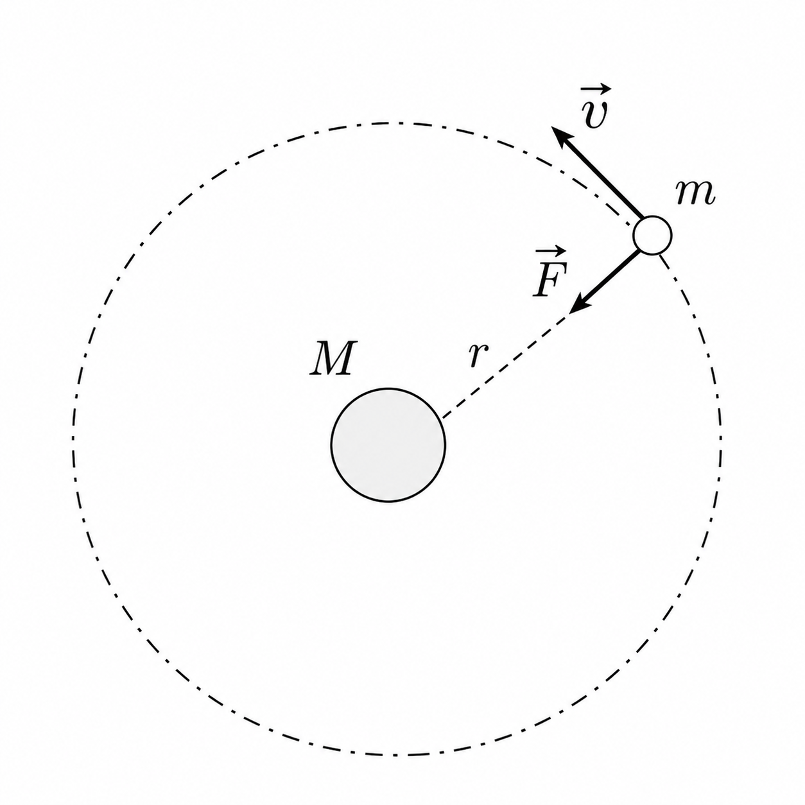
10. Satélites
En general, cuando un objeto se mueve bajo la acción de un campo gravitatorio central, su trayectoria es una curva cónica (elipse, circunferencia, parábola o hipérbola). Por simplicidad matemática, en este curso nos centraremos en el estudio de las órbitas circulares, que constituyen una aproximación excelente para la mayoría de los planetas y satélites artificiales.
Sea un satélite de masa m que describe una órbita circular, de radio r, alrededor de un planeta de masa M, que ejerce una fuerza de atracción gravitatoria sobre el satélite. Como esta fuerza es central entonces es perpendicular a la trayectoria del satélite en todo momento, por tanto, se trata de una fuerza centrípeta. Según la Ley de Gravitación Universal:
\(F = G\frac{Mm}{r^{2}}\)
Y como en este caso F es también una fuerza centrípeta:
\(F = {ma}_{n} = m\frac{v^{2}}{r}\)
Igualando:
\(G\frac{Mm}{r^{2}} = m\frac{v^{2}}{r} \Rightarrow v^{2} = G\frac{M}{r}\)
Se llama velocidad orbital a:
\(v_{orb} = \sqrt{\frac{GM}{r}}\)
Como la velocidad es constante, se trata de un movimiento circular uniforme. En este caso, la relación entre la velocidad angular, ω, y la velocidad lineal, v, es: v= ωr, siendo r el radio de la trayectoria. Así:
\(\omega r = \sqrt{\frac{GM}{r}} \Rightarrow \omega = \sqrt{\frac{GM}{r^3}}\)
El período, T:
\(\omega = \frac{2\pi}{T} \Rightarrow T = \frac{2\pi}{\omega} = 2\pi\sqrt{\frac{r^3}{GM}} \Rightarrow T^2 = \frac{4\pi^2}{GM}r^3\)1
La frecuencia orbital, \(f\), es:
\(f = \frac{1}{T} = \frac{1}{2\pi}\sqrt{\frac{GM}{r^3}}\)
Usando la expresión de la velocidad de órbita, podemos determinar la energía mecánica que posee el satélite en la órbita:
\(Ec_{orb} = \frac{1}{2}mv_{orb}^{2} = \frac{1}{2}\frac{GMm}{r}\)
\(Ep_{orb} = -\frac{GMm}{r}\)
\(Em_{orb} = -\frac{1}{2}\frac{GMm}{r}\)
Observaciones sobre la energía del satélite en órbita:
La energía mecánica es negativa (\(Em_{orb}\)< 0), lo que indica que el satélite forma un sistema ligado (está atrapado en el campo gravitatorio).
La energía mecánica coincide con la mitad de la energía potencial: \(Em_{orb} = \frac{1}{2}Ep_{orb}\)
La energía mecánica coincide con la energía cinética cambiada de signo: \(Em_{orb} = - Ec_{orb}\).
Cuanto mayor es el radio de la órbita (r), mayor (menos negativa) es la energía mecánica total.
10.1. Energía de satelización
Se define la energía de satelización (\(E_{sat}\)) como el trabajo exterior total que deben realizar los motores de un cohete para situar un satélite de masa m, inicialmente en reposo sobre la superficie de un planeta (r = R), en una órbita circular estable de radio r (r = R + h).
Energía inicial (satélite en reposo en la superficie): \(Em_{inicial} = -G\frac{Mm}{R}\)
Energía final (satélite en órbita circular de radio r): \(Em_{orbita} = - \frac{1}{2}G\frac{Mm}{r}\)
\(E_{sat} = Em_{orbita} - Em_{inicial} = GMm\left(\frac{1}{R} - \frac{1}{2r}\right)\)
Esta energía suministrada por los motores se invierte simultáneamente en elevar el satélite hasta la altura de la órbita, \(\Delta Ep\), y en acelerarlo hasta alcanzar la velocidad orbital requerida, \({Ec}_{orb}\).
10.2. Velocidad de escape desde la superficie terrestre
La energía mecánica, Em, de una partícula de masa m en un campo gravitatorio es:
Em = EC + Ep
Suponiendo que no existen fuerzas no conservativas, la energía mecánica es constante durante todo el movimiento de m. Si se representa gráficamente la energía mecánica, la energía potencial gravitatoria, Ep, y la energía cinética, EC, de la partícula de masa m:
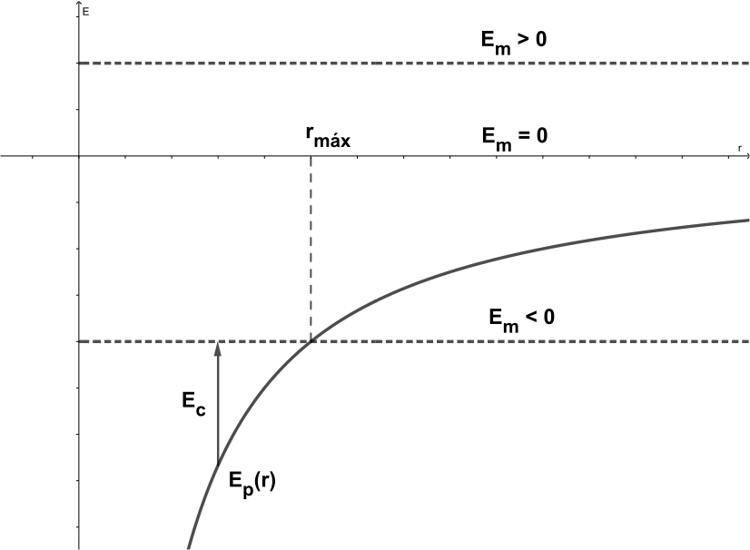
Si Em < 0, habrá un valor de r (rmáx), que corresponde al punto de intersección entre la curva de la energía potencial y la recta de la energía mecánica, en el que la partícula no posee energía cinética porque toda la energía mecánica es energía potencial gravitatoria. Este valor de r no puede ser superado por la partícula, ya que si fuera así, Ep > Em y la energía cinética tendría que ser negativa para que se cumpliera la igualdad Em = EC + Ep. En este caso la partícula está atrapada por el campo gravitatorio.
Si Em ≥ 0, cualquier valor de r es físicamente posible, lo que significa que la partícula podrá moverse libremente por todo el espacio (podrá estar a cualquier distancia de la partícula que crea el campo).
Sea una partícula de masa m, inmersa en un campo gravitatorio. Se le imprime un impulso inicial de forma que adquiere cierta velocidad. En el caso límite Em = 0 se habrá suministrado a la partícula la velocidad mínima necesaria para que pueda tomar cualquier valor de r, es decir, para que pueda moverse libremente o, lo que es lo mismo, poder escapar del campo gravitatorio. Esta velocidad se denomina velocidad de escape:
\(E_{m} = 0 \Rightarrow E_{C} + Ep = 0 \Rightarrow \frac{1}{2}mv_{e}^{2} - G\frac{Mm}{R} = 0 \Rightarrow \frac{v_{e}^{2}}{2} = \frac{GM}{R}\)
\(v_e = \sqrt{\frac{2GM}{R}}\) (III)
En donde R es la posición en la que se encuentra la partícula antes de ser lanzada.
Para que un cuerpo situado en la superficie de la Tierra pueda escapar al campo gravitatorio de esta sin la ayuda de propulsión, la velocidad de escape que debe adquirir es:
\(v_{e,\,Tierra} = \sqrt{\frac{2GM_T}{R_T}} \approx 11200\ \frac{m}{s}\)
Velocidad de escape desde una órbita circular
Consideremos un satélite de masa m que se encuentra describiendo una órbita circular de radio r (r =R + h) alrededor de un planeta de masa M.
Para que el satélite venza la atracción gravitatoria y llegue al infinito con velocidad nula, su energía mecánica total al escapar debe ser igual a cero (E_m(∞) = 0).
Aplicando la conservación de la energía mecánica en el punto de escape (a distancia r):
\(\frac{1}{2}mv_e^2 - \frac{GMm}{r} = 0\)
\(v_e = \sqrt{\frac{2GM}{r}}\) (IV)
Las expresiones III y IV son muy parecidas pero no son iguales. En el primer caso la distancia R es el radio de la Tierra y en el segundo caso r es el radio de órbita.
Si comparamos la velocidad que necesita para escapar con la que ya lleva en su órbita :
\(v_{e,\,orbita} = \sqrt{\frac{2GM}{r}} = \sqrt{2}\sqrt{\frac{GM}{r}} = \sqrt{2}\,v_{orb}\)
El satélite necesita una velocidad total que sea un 41,4% mayor que su velocidad orbital.
Como el satélite ya se desplaza a una velocidad \(v_{orb}\), si el impulso se da en la misma dirección y sentido de su movimiento, el cohete solo tiene que aportar la diferencia:
\(\Delta v = v_{e,\,orbita} - v_{orb} = (\sqrt{2} - 1)v_{orb}\)
La energía necesaria a aportar por los motores será:
\(W_{motores} = Em_{final} - Em_{orbita} = 0 - \left(-\frac{1}{2}\frac{GMm}{r}\right) = \frac{1}{2}\frac{GMm}{r}\)
Esta energía coincide con la energía mecánica del satélite en órbita cambiada de signo.
10.3. Cambio de órbita y trabajo de los motores
Si tenemos un satélite en una órbita circular de radio r₁ y queremos que pase a otra órbita circular de radio r₂, la energía mecánica no se conserva.
La energía mecánica de un satélite en órbita circular depende exclusivamente del radio:
En la órbita inicial (r₁): \(Em_{1} = - \frac{1}{2}G\frac{Mm}{r_{1}}\)
En la órbita final (r₂): \(Em_{2} = - \frac{1}{2}G\frac{Mm}{r_{2}}\)
Dado que r₁ ≠ r₂, se cumple necesariamente que \(Em_{1} \neq Em_{2}\).
Para modificar la órbita es imprescindible encender los motores del satélite (fuerza no conservativa). Aplicando el teorema conservación generalizado de la energía mecánica:
\(W_{FNC} = \Delta E_{m}\)
\(W_{motores} = Em_{2} - Em_{1}\)
\(W_{motores} = - \frac{1}{2}G\frac{Mm}{r_{2}} + \frac{1}{2}G\frac{Mm}{r_{1}}\)
\(W_{motores} = \frac{1}{2}GMm\left(\frac{1}{r_1} - \frac{1}{r_2}\right)\)
Subir a una órbita más alta (r₂ > r₁): La energía mecánica final es más alta (menos negativa), por lo que \(\Delta Em\)> 0 y los motores deben realizar un trabajo positivo (consumir combustible para suministrar energía).
Bajar a una órbita más baja (r₂ < r₁): La energía mecánica final es menor, por lo que \(\Delta Em\) < 0 y los motores deben realizar un trabajo de frenado (extraer energía del satélite).
Notas
Esta relación entre el periodo y la distancia fue propuesta por Johannes Kepler y es conocida como Tercera Ley de Kepler: T2 = k r3. Kepler no pudo relacionar el valor de k con la masa que crea el campo y la constante G, que era desconocida en su época.↩︎